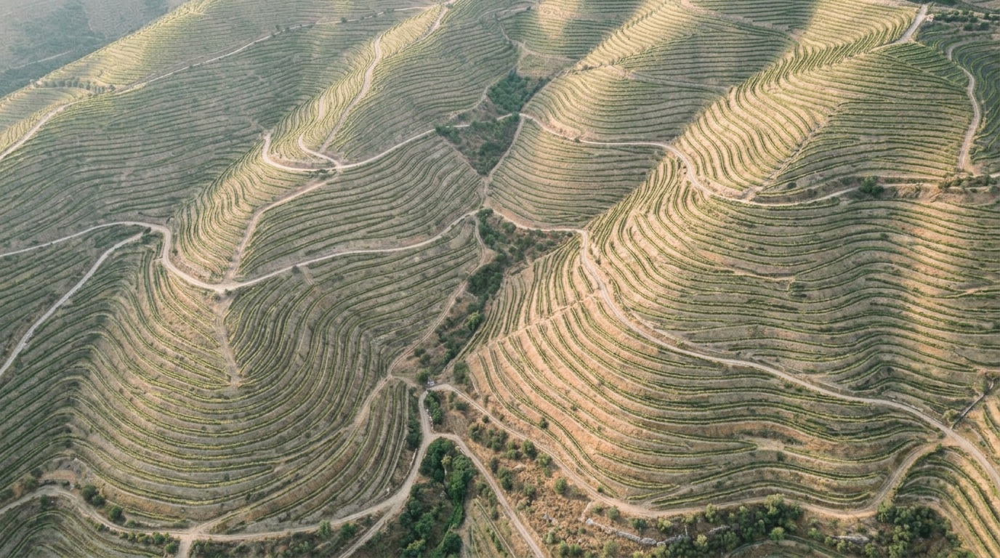
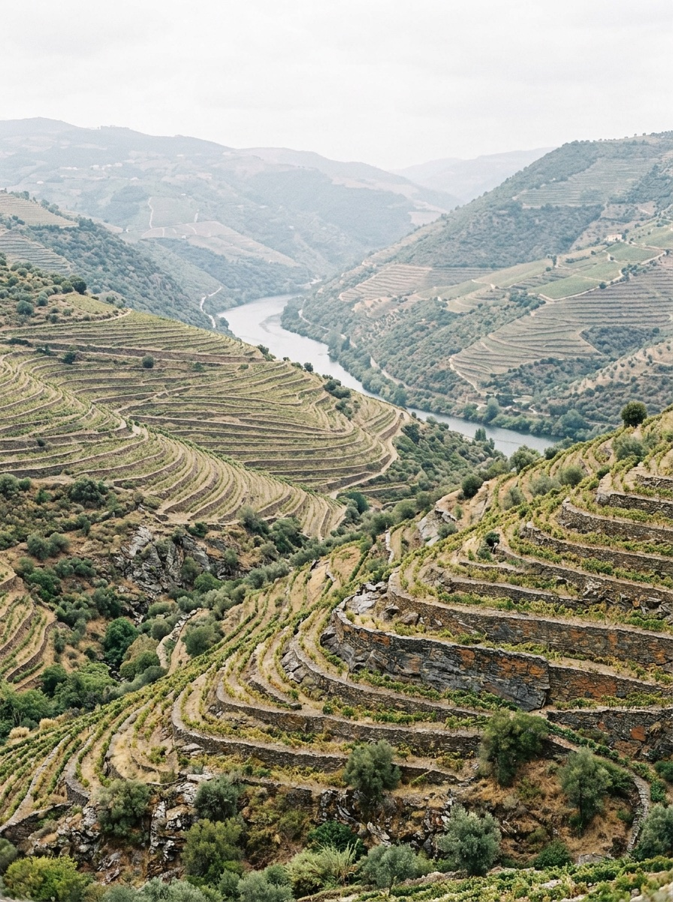
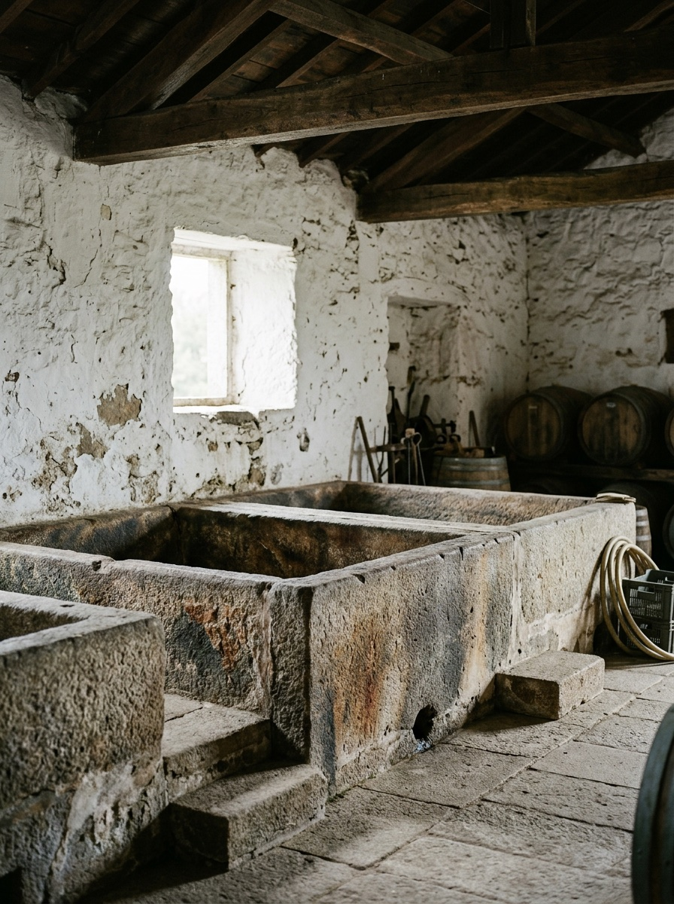
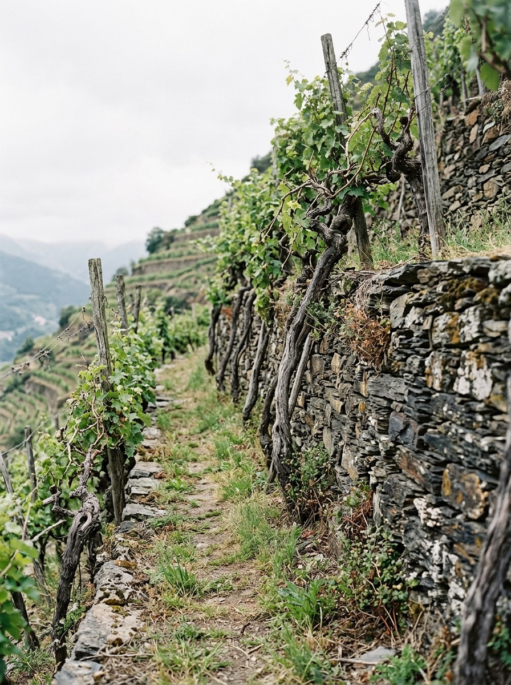
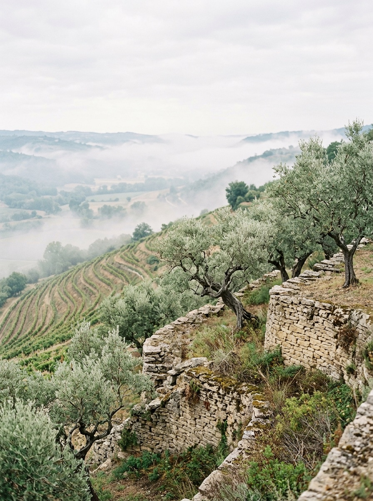
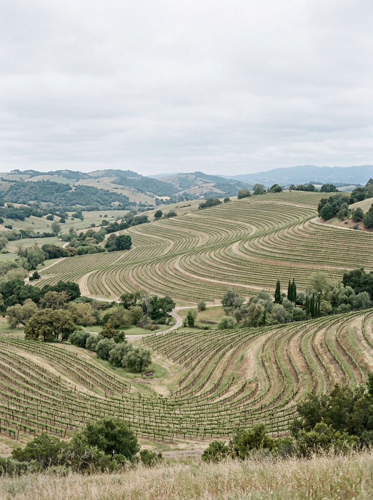
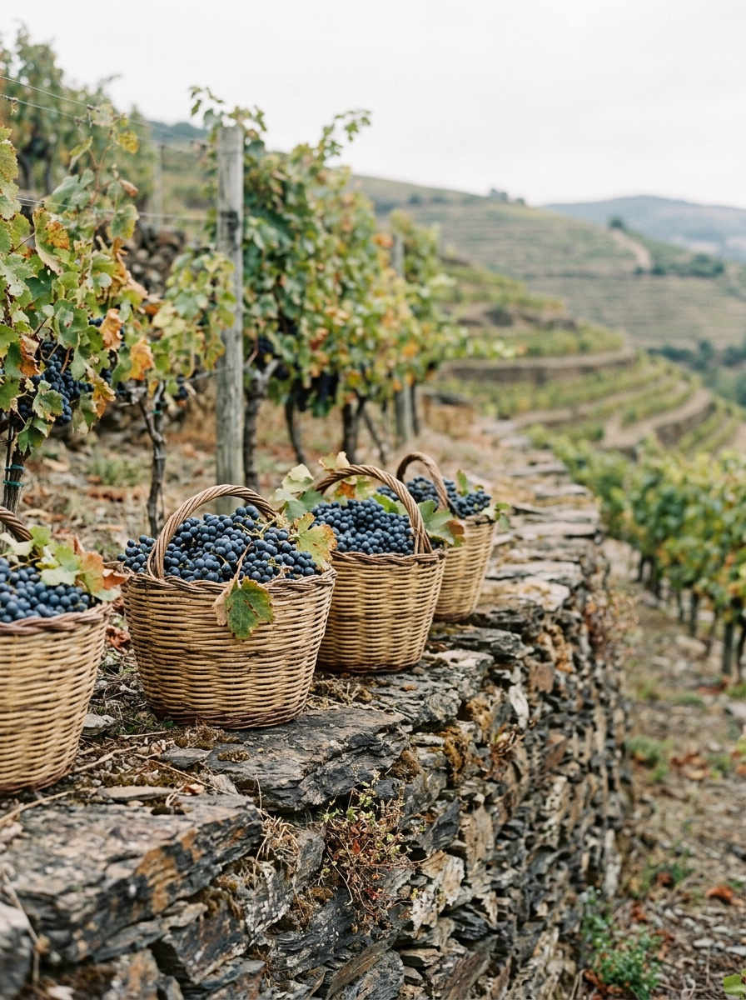

Seam Transitions

Socalco
Douro wines
Since 1820
(01) Estate
Our terraces follow the contours of the hill, as they have for two hundred years: forty hectares of old vines above the river.
-

Upper Terraces 1820
-

The Lagares 1888
-

Old Vines 1934
-

Olive Terraces 1951
-

Contour Rows 1978
-

Harvest 2025